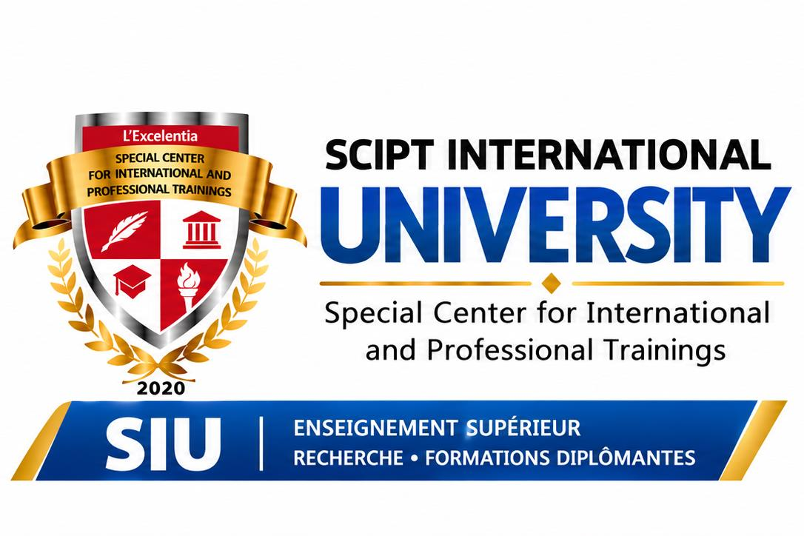

École de Droit, Sciences & Gestion d’Administration

Des parcours en droit, administration, gestion et finance.
← Retour à l’accueil
Présentation et domaines
Cette école réunit les études juridiques, l’administration et les sciences de gestion. Les parcours visent à relier la compréhension des institutions à la conduite concrète des organisations.
Domaines présentés
- Droit & sciences juridiques
- Administration
- Gestion, commerce & finance
Notre approche
- Analyser des situations et des documents
- Organiser un projet ou un service
- Argumenter et communiquer clairement
Programmes universitaires
Sélectionnez un niveau, puis une formation. Les niveaux disponibles pour chaque programme seront confirmés par les admissions.
Formations professionnelles
Qualifications à confirmer selon la formation choisie.
Conditions d’inscription
Le choix d’un parcours commence par un échange sur votre niveau d’études et votre objectif. Les pièces à fournir, les prérequis et les éventuelles équivalences sont confirmés pour chaque formation lors de la candidature.
Voir les conditions d’admission →Frais de scolarité
Le coût dépend de la formation et du niveau retenus. La fiche de chaque formation présente l’emplacement prévu pour le tarif officiel et l’échéancier en trois tranches. Demandez la grille validée avant de vous engager.
Consulter les modalités de paiement →